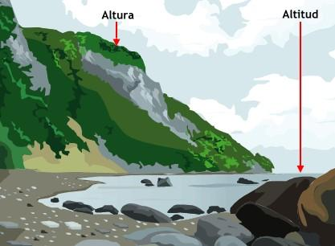

| NOMBRE |
CARACTERISTICAS |
| ALTITUD  |
Es la altura de un territorio sobre el nivel del mar. Así, una región montañosa está a una altitud mayor que una región en las cercanías de una playa. Determinada por la altitud se clasifican 5 pisos térmicos Cálido. Se encuentra entre 0 y 1.000 metros respecto al nivel del mar. Templado. Entre 1.000 y 2.000 metros. Frío. Entre los 2.000 y los 3.000 metros. Nival y nublado. Más de 3.000 metros de altitud. |
| CORRIENTES OCEANICAS |
Estas corrientes causan efectos sobre el clima. Existen corrientes oceánicas frías que provocan descenso de temperaturas y precipitaciones, mientras que las corrientes cálidas elevan las temperaturas. |
| HUMEDAD ATMOSFERICA |
Es la concentración o cantidad de agua o vapor concentrado que se halla en el ambiente. Se mide con el instrumento llamado higrómetro. |
| LATITUD |
Es la distancia determinada por la línea ecuatorial y un punto determinado. La línea el ecuador divide la Tierra en 2 hemisferios: hemisferio norte y hemisferio sur. La cercanía de la región respecto a la línea del ecuador aumenta la temperatura, mientras que su distanciamiento hacia los polos disminuye la misma. |
PRECIPITACION |
Es el agua que procede de las nubes cayendo a la superficie terrestre en forma de granizo, lluvia o nieve. |
| PRESION ATMOSFERICA |
Es el peso del aire sobre la superficie terrestre. La presión estará determinada por la altitud y la temperatura. Para medirla se usa el barómetro y se mide en milibares. De la presión atmosférica surgen los fenómenos climáticos conocidos como ciclón y anticiclón. |
| TEMPERATURA |
Es la variación del calor que se presenta en la atmósfera de un lugar. Para medir dicha temperatura se utiliza el termómetro y se mide en grados Celsius, grados Kelvin o grados. La temperatura se encuentra determinada por la radiación solar quien a su vez se halla determinada por 2 factores Factores planetarios: La rotación del planeta determina los cambios entre el día y la noche y generan variaciones de temperaturas. Por otra parte también se encuentra supeditado al cambio de traslación de la tierra respecto al sol que determinará las diferentes estaciones del año. Factores geográficos: Depende de las condiciones específicas del lugar. Estos pueden ser: altitud, latitud, distancia en relación al nivel del mar, etc. Dichos conceptos se desarrollarán posteriormente. |
VIENTO |
Es el peso del aire sobre la superficie terrestre. La presión estará determinada por la altitud y la temperatura. Para medirla se usa el barómetro y se mide en milibares. De la presión atmosférica surgen los fenómenos climáticos conocidos como ciclón y anticiclón. |